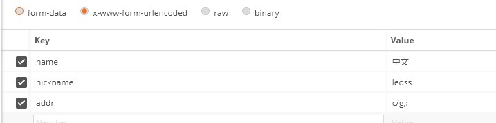
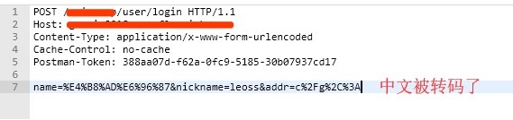
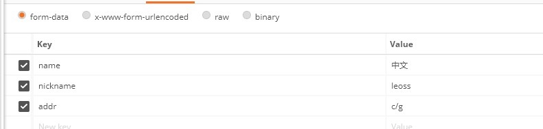
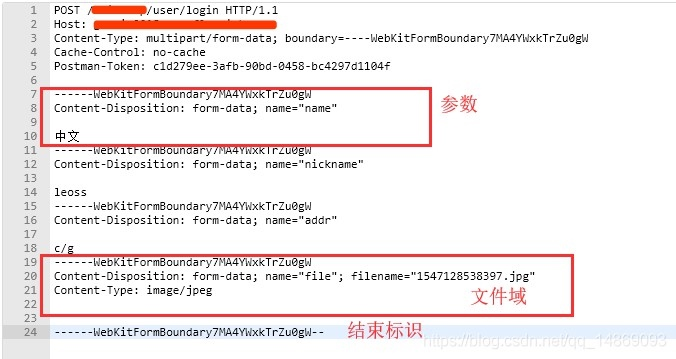
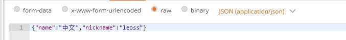

Content-Type（MediaType），即是Internet Media Type，互联网媒体类型，也叫做MIME类型。在互联网中有成百上千中不同的数据类型，HTTP在传输数据对象时会为他们打上称为MIME的数据格式标签，用于区分数据类型。最初MIME是用于电子邮件系统的，后来HTTP也采用了这一方案。
在HTTP协议消息头中，使用Content-Type来表示请求和响应中的媒体类型信息。它用来告诉服务端如何处理请求的数据，以及告诉客户端（一般是浏览器）如何解析响应的数据，比如显示图片，解析并展示html等等。
Content-Type的格式
Content-Type：type/subtype ;parameter
type：主类型，任意的字符串，如text，如果是*号代表所有；subtype：子类型，任意的字符串，如html，如果是*号代表所有，用“/”与主类型隔开；parameter：可选参数，如charset，boundary等。
例如
Content-Type: text/html;Content-Type: application/json;charset:utf-8;
常见Content-Type
常见的Content-Type有数百个，下面例举了一些
HTML文档标记：text/html;
普通ASCII文档标记：text/html;
JPEG图片标记：image/jpeg;
GIF图片标记：image/gif;
js文档标记：application/javascript;
xml文件标记：application/xml;
重点Content-Type
application/x-www-form-urlencoded
HTTP会将请求参数用key1=val1&key2=val2的方式进行组织，并放到请求实体里面，注意如果是中文或特殊字符如"/"、","、“:" 等会自动进行URL转码。
不支持文件，一般用于表单提交。
- 请求参数
 - http 请求报文

multipart/form-data
与application/x-www-form-urlencoded不同，这是一个多部分多媒体类型。首先生成了一个 boundary 用于分割不同的字段，在请求实体里每个参数以------boundary开始，然后是附加信息和参数名，然后是空行，最后是参数内容。多个参数将会有多个boundary块。如果参数是文件会有特别的文件域。最后以------boundary–为结束标识。
multipart/form-data支持文件上传的格式，一般需要上传文件的表单则用该类型。
- 请求参数
 - http 请求报文

application/json
JSON 是一种轻量级的数据格式，以“键-值”对的方式组织的数据。这个使用这个类型，需要参数本身就是json格式的数据，参数会被直接放到请求实体里，不进行任何处理。服务端/客户端会按json格式解析数据（约定好的情况下）。
- 请求参数
 - http 请求报文

application/xml 和 text/xml
与application/json类似，这里用的是xml格式的数据，text/xml的话，将忽略xml数据里的编码格式。
Content-Type的使用
request 的Content-Type
一般我们在开发的过程中需要注意客户端发送请求（Request）时的Content-Type设置，特别是使用ajax的时候，如果设置得不准确，很有可能导致请求失败。比如在spring中，如果接口使用了@RequestBody，spring强大的自动解析功能，会将请求实体的内容自动转换为Bean，但前提是请求的Content-Type必须设置为application/json，否正就会返回415错误。
注：415 错误是 Unsupported media type，即不支持的媒体类型。
建议：
- 如果是一个restful接口（json格式），一般将Content-Type设置为application/json; charset=UTF-8；
- 如果是文件上传，一般Content-Type设置为multipart/form-data
- 如果普通表单提交，一般Content-Type设置为application/x-www-form-urlencoded
response的Content-Type
服务端响应（Response）的Content-Type最好也保持准确，虽然一般web开发中，前端解析响应的数据不会根据Content-Type，并且服务端一般能自动设置准确的Content-Type，但是如果乱设置某些情况下可能会有问题，比如导出文件，打开图片等。如果在spring项目里使用@ResponseBody，spring会将响应的Content-Type设置为application/json;charset=UTF-8;，可能会导致文件无法导出，需要注意下。
建议：
- 一般情况下不需要显示设置；
- 如果是文件导出，Content-Type 设置为
multipart/form-data，并且添加一个Content-Disposition设置为attachment;fileName=文件.后缀。
注：Content-Disposition是Content-Type的扩展，告诉浏览器弹窗下载框，而不是直接在浏览器里展示文件。因为一般浏览器对于它能够处理的文件类型，如txt，pdf 等，它都是直接打开展示，而不是弹窗下载框。